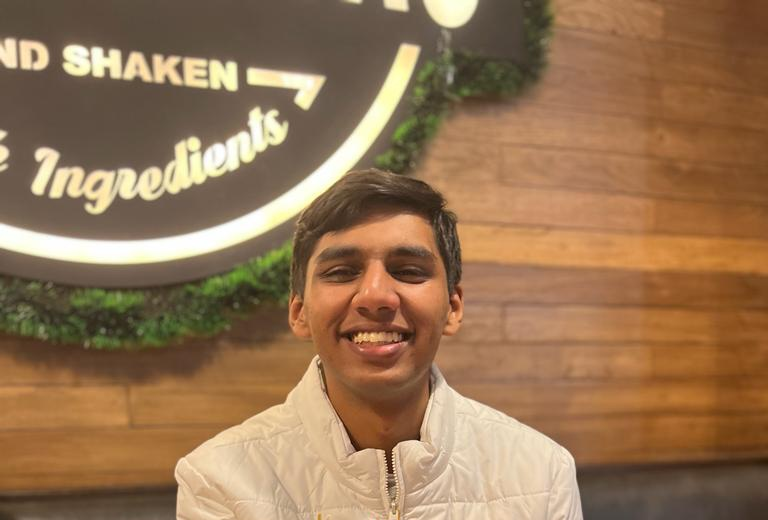

[ robotics · computer vision · iot ]
Pranav Jha
Incoming MS in Robotics at the University of Michigan.I build autonomous robotic systems by combining robot perception, simulation, and AI—from digital twins in NVIDIA Isaac Sim to real-time deep learning models deployed on NVIDIA Jetson for field robotics.

[ about ]
I'm a robotics graduate student at the University of Michigan with a background in Computer Science and Engineering specializing in IoT and Intelligent Systems. I build intelligent robotic systems that perceive, navigate, and interact with the real world—from underwater robot perception and semantic segmentation to digital twins, robotic simulation, and autonomous systems. My interests lie in robot perception, autonomous navigation, simulation, and underwater robotics. I began by developing AI and IoT systems before transitioning toward robotics through research and industry experience. During my research internship at CSIR–National Institute of Oceanography, I developed lightweight deep learning models for real-time coral reef semantic segmentation and deployed them on NVIDIA Jetson Nano for underwater ROV applications. At InterraIT, I worked with NVIDIA Isaac Sim and ROS2 to develop a digital twin of the FANUC R-50iA robot controller for simulation-based testing and validation. Earlier, my internship at Siemens Digital Industries Software exposed me to industrial IoT, edge AI, and intelligent automation. My long-term goal is to conduct research and develop autonomous robotic systems that operate in challenging environments, particularly in underwater robotics, robot perception, and intelligent autonomy, while bridging cutting-edge AI with real-world robotic deployment.
- Based in
- Gurgaon, India
- Next
- MS Robotics, University of Michigan
- Starting
- Aug 2026
- pranavcr26@gmail.com
[ experience ]
Experience
-
Student Trainee
Jan – Apr 2026InterraIT · Noida
- Built a digital twin of the FANUC R-50i robot controller in NVIDIA Isaac Sim for realistic simulation and virtual validation of robotic operations.
- Explored ROS2 integration with Isaac Sim for simulation-driven testing and control of robotic applications.
-
Research Intern
Jun – Aug 2025CSIR – National Institute of Oceanography · Goa
- Built lightweight, real-time coral reef segmentation models using SegFormer, UNet, and PIDNet with teacher–student knowledge distillation.
- Preprocessed and augmented underwater datasets for robustness under low-light and turbid conditions.
- Deployed optimized models on an NVIDIA Jetson Nano for live inference through an ROV.
-
Deep Learning Intern
Jun – Aug 2024Indira Gandhi Delhi Technical University for Women · Delhi
- Designed a heart disease prediction model with ensemble learning, improving diagnostic accuracy by 30%.
- Built a CNN-based waste classification system that improved sorting efficiency by 20%.
- Compared TensorFlow and PyTorch implementations for speed, accuracy, and compute trade-offs.
-
IoT Intern
May – Jul 2024Siemens Digital Industries Software · Gurgaon
- Built real-time analytics pipelines on edge IoT devices using Azure AI and Azure IoT Hub to monitor industrial sensor data.
- Automated Excel-based reporting workflows, cutting manual reporting time by 15%.
- Explored PLC–IoT integration and mobile device management for industrial automation.
-
Machine Learning Intern
Jan – Feb 2024CodSoft · Remote
- Built a movie genre classifier and an SMS spam classifier using TF-IDF and Multinomial Naive Bayes.
- Built a credit card fraud detection system using logistic regression.
-
Machine Learning Intern
Jan – Feb 2024Bharat Intern · Remote
- Designed and trained classification and prediction models using Python, Scikit-learn, and Pandas.
- Built end-to-end pipelines for preprocessing, training, and evaluation across multiple ML projects.
[ projects ]
Featured work
Digital Twin of a FANUC R-50i Robot Controller
Digital twin built in NVIDIA Isaac Sim for simulation, performance analysis, and virtual validation of industrial robot operations, with ROS2 integration for controller testing.
Coral Reef Semantic Segmentation
Lightweight real-time segmentation system using teacher–student distillation (SegFormer, UNet, PIDNet), deployed on a Jetson Nano for live coral classification from ROV footage.
Autonomous Firefighting Robot
Fully simulated robot that detects and extinguishes fires using SLAM navigation, YOLOv8 fire detection, and thermal vision, with a robotic arm launching an extinguisher ball on target.
GestureSync Music Controller
Touchless system on a Raspberry Pi and webcam for controlling music, multimedia, and system navigation — real-time gesture control with no physical peripherals, built for hands-free environments.
Sign Language Detection Model
Real-time sign language detection that bridges communication for individuals with speech or hearing impairments, translating webcam gestures into text using TensorFlow Object Detection.
PPE Detection Kit
Smart safety gate that verifies helmet, mask, goggles, and vest compliance via YOLOv8 before an Arduino-controlled servo grants access.
Smart Attendance System (SMAT)
Automated, contactless attendance tracking using facial recognition on a Raspberry Pi and webcam, eliminating manual marking for classrooms and offices in real time.
StellarCycle
AI system classifying space debris into recyclable and non-recyclable categories from spectrometric and visual data, with a Flask UI for real-time image analysis to support sustainable space operations.
Earlier projects
Obstacle Avoidance Robot
Autonomous navigation using ultrasonic sensors and a dual-motor driver.
GitHub →Real-Time Object Detection
Webcam-based detection using a pre-trained YOLO model.
GitHub →Disease Prediction
SVM-based model predicting likely diseases from symptoms.
GitHub →Sneakerhead
E-commerce sneaker storefront with cart and AJAX browsing.
GitHub →PyWeather
Terminal tool pulling live weather via the OpenWeather API.
GitHub →Gemini Chatbot
Streamlit chat interface built on Google's Gemini API, with persistent chat history.
GitHub →[ research & recognition ]
Publications, patents & leadership
Publications
- Knowledge Distillation of Real-Time Coral Segmentation for Underwater ROV Applications
- Real-Time Coral Semantic Segmentation for Underwater ROV Applications
- Autonomous Firefighting Robot with Catapult-Based Suppression in ROS-Gazebo Environment
- Leveraging Optimized Hybrid Ensemble Models to Predict Sustainability Awareness in Indian Youth
- Blockchain-Based Optimization Algorithm for Secure IoT Communication Using AMQP
Patents filed
- IoT-Based Smart Parking System using Arduino UNO and Xcode
- Fire-Fighting & Rescue Robot with Real-Time Image Detection and Autonomous Navigation
- GestureSync Music Controller
- People Counting Device
- Smart Attendance System
- Automated Fare Collection Device
Leadership & outreach
- Technical Secretary, IEEE Sensors Council MUJ
- Head of Projects, IEEE Sensors Council MUJ
- Guest Speaker, Robotics Workshop
- Robotics Workshop for Alumni Outreach
Achievements & certifications
- Top 200 nationwide, Smart India Hackathon
- Certificate of Excellence — Technical & Innovation
- Certificate of Excellence — Research (×2)
- Certificate of Appreciation — patent publication
- Cisco CCNA — Networks, Switching, Wireless & Routing
- Stanford — Supervised Machine Learning
- Microsoft — Azure Solutions on Edge Devices
- UC Irvine — Introduction to IoT (6-course specialization)
[ skills ]
Skills
Languages
Robotics & Simulation
ML & Vision
Hardware & IoT
Tools
[ education ]
Education
University of Michigan
Aug 2026 – May 2028 (Expected)Master of Science, Robotics — Ann Arbor, MI
Manipal University Jaipur
Sep 2022 – Jun 2026B.Tech (Hons), Computer Science & Engineering — IoT & Intelligent Systems · CGPA 7.77/10(3.32/4) — Jaipur, RJ, India
[ contact ]
Let's talk
Open to research collaborations and roles in robotics, computer vision, and applied ML ahead of starting at Michigan.